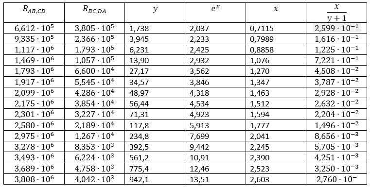
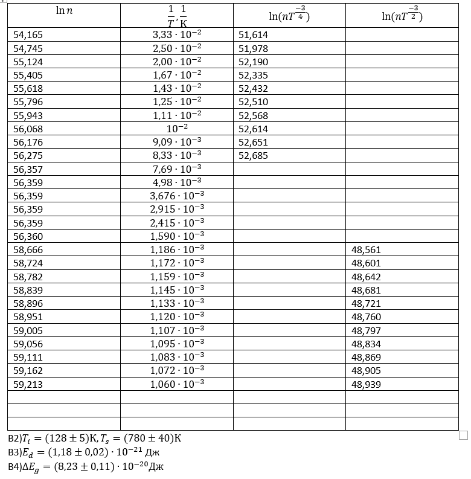

Semiconductor wafers --- Solution
Y20 (2020) — English translation
A1Obtain the values of $I_{AB}$, $U_{CD}$, $I_{DA}$ and $U_{BC}$ for 15 different connections to the plate.??
A2Compute $R_{\text{AB,CD}}$, $R_{\text{BC,DA}}$ and $y$ for each of the connections. Round all values to the nearest 4 significant figures.0.90
A3The formula $\cfrac{y-1}{y+1}=\cfrac{1}{x} \text{arch}\left(\cfrac{\text{e}^x}{2}\right)$ can be converted to the form $\text{e}^x=\text{e}^{\alpha x} + \text{e}^{\beta x}$. Find $\alpha$ and $\beta$. Express your answer using $y$.0.10
A4The equation $\text{e}^x=\text{e}^{\alpha x} + \text{e}^{\beta x}$ is transcendental and cannot be solved analytically. Solve it numerically, i.e. for each $y$, find $\text{e}^x$ (to 4 significant figures).3.00

A5Having plotted a graph in suitable coordinates, determine the numerical value $\rho$ of the semiconductor. Round your answer to 3 significant figures. Take the thickness of the material equal to $d=1~\text{mm}$.2.00
$\rho=(2.3\cdot 10^3\pm5)~\text{\Omega}$
B1Remove dependency $n(T)$.??

B2Plot the dependence $\ln n~(\frac{1}{T})$. Approximate three sections of this graph with straight lines and determine the values of $T_i$ and $T_s$. Estimate the error of the obtained values.1.60
B4Find $\Delta{E_g}$.1.20